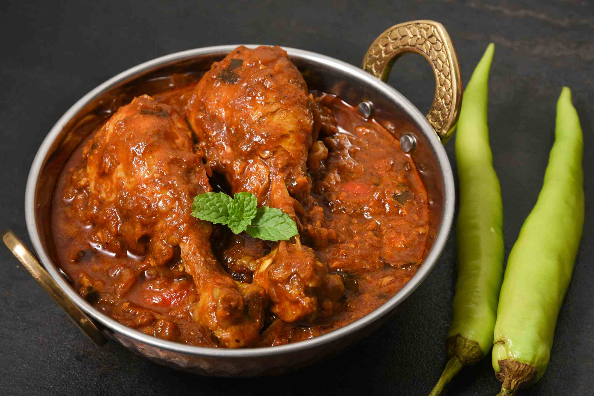

Kerala Style Chicken Curry

Description
"This is a fantastic main dish for a South Indian meal, which should always be served with several dishes," says Anne-Marie. "Enjoy this chicken curry with curried green beans, parboiled or basmati rice, or a flat bread. The red chili powder called for here is NOT the same as the chili powder Americans use to flavor chili and tacos. This red chili powder is available from Indian grocery stores and is MUCH HOTTER."
Ingredients
- 2 tablespoons olive oil
- 1 teaspoon black mustard seeds
- 1 tablespoon minced fresh ginger root
- 1 (15 ounce) can diced tomatoes
- 3 teaspoons ground coriander
- 1 ½ pounds chicken breasts, cut into large chunks
- water to cover
Preparation step
- Heat olive oil in a large skillet with a lid over medium heat until hot but not smoking.
- Drop in mustard seeds and cumin seeds, cover skillet, and wait until the mustard seeds have all popped. Add onion, ginger, and curry leaves.
- Saute over medium heat for about 5 minutes. Add tomatoes, coriander, red chili powder, turmeric, and cinnamon stick; stir well.
- Add chicken and enough water to barely cover the chicken. Bring to a boil, cover, and simmer over medium or medium-low heat for about 45 minutes,
- checking every 10 minutes to make sure there is enough moisture in the skillet to keep the chicken from burning.
- Add more water if necessary. When the chicken is tender, season with salt and serve.
Back to Home